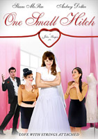

Movies


- All of the princes wear clothing with a pattern spelling out their number in Roman numerals, composed by smaller Arabic numerals.
-
- Septimus' musical theme is written in 7/8 time.
-
- Michelle Pfeiffer was Matthew Vaughn's only choice for the rule of the Witch Queen. He had been a die-hard fan since first seeing her in Grease 2(1982).

- John Burgess won the "Rising Star" award at the Naples International Film Festival for One Small Hitch.
-
- The producers licensed 16 seconds of "Sixteen Candles" for when Molly Mahoney is watching TV as an homage to John Hughes.
-
- John Burgess won the "Rising Star" award at the Naples International Film Festival for One Small Hitch.

- During the Riff-Off, Ester Dean sings S&M, which was co-written by her.
-
- Adam Devine (Bumper) accidentally hit a cameraman with one of the burritos he had to throw out of the bus.
-
- Kelley Jakle (Jessica) was an actual ICCA-winner in 2008 and 2010 with the USC SoCal Vocals. Ben Bram, who worked in the music department of the film, also won the ICCAs with the 2008 and 2010 USC SoCal Vocals.

"So anyways, let's get down to the nitty gritty."
~Nacho Libre